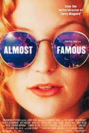

Almost Famous
★★★★
Almost Famous est un film Américain d'inspiration autobiographique écrit et réalisé par Cameron Crowe sorti en 2000
Action.Drama.sci-fi | 2000 | AMERIQUE | 142 min
★★★★
Almost Famous est un film Américain d'inspiration autobiographique écrit et réalisé par Cameron Crowe sorti en 2000
★☆☆☆
Avatar est un film de science-fiction américain réalisé par James Cameron et sorti en 2009. Il s'agit du premier film de la franchise cinématographique Avatar.
★★★★
Best in Show est un film comique américain de 2000 co-écrit par Christopher Guest et Eugene Levy et réalisé par Guest. Le film suit cinq participants à une prestigieuse exposition canine alors qu'ils se rendent à l'exposition et concourent une fois sur place.
★★★★
The Box, également intitulé La Boîte au Québec, est un thriller américain, à tonalité fantastique, réalisé par Richard Kelly, sorti en 2000
☆☆☆☆
Ni Dieux ni Démons (Gods and Monsters) est un film américano-britannique réalisé par Bill Condon, sorti le 21 janvier 1998.
★☆☆☆
La Plage (The Beach) est un film dramatique britannico-américain réalisé par Danny Boyle et sorti en 2000. C'est une adaptation du roman du même nom d'Alex Garland

★★★☆
The Luzhin Defense est un film dramatique romantique de 2000réalisé par Marleen Gorris , avec John Turturro et Emily Watson .
★★★★
Mission impossible est une série cinématographique américaine, inspirée de la série télévisée éponyme mettant en vedette depuis 1996 Tom Cruise
☆☆☆☆
La Planète des singes (Planet of the Apes) est une franchise multimédia de science-fiction composée de films, de livres, de séries télévisées et de bandes dessinées qui présente des humains et des singes intelligents qui s’affrontent pour dominer la Terre.
★☆☆☆
Serveuse dans un restaurant situé dans une petite ville texane, Betty a toujours rêvé de devenir infirmière. Elle essaye d'oublier sa vie médiocre en regardant son feuilleton préféré, « Amour et passion »
★★★★
Un présentateur météo de Chicago, souvent victime de citoyens mécontents de ses prévisions, est sur le point de passer une audition à New York pour une émission matinale diffusée à la grandeur du pays.
★★☆☆
Mysterious Skin est un film de passage à l'âge adulte de 2000 écrit et réalisé par Gregg Araki , adapté du roman du même nom de Scott Heim de 1995.